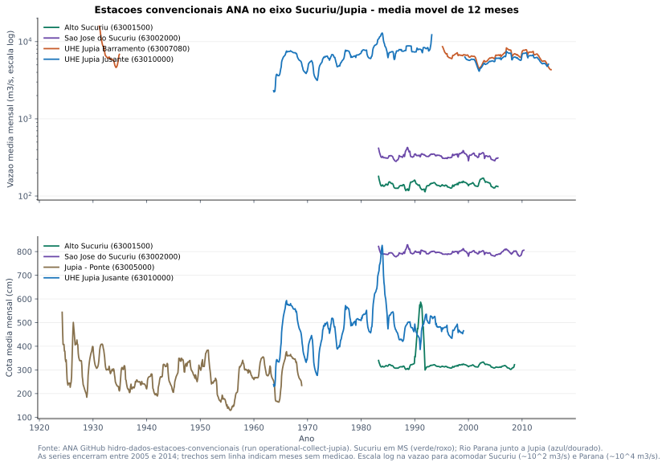
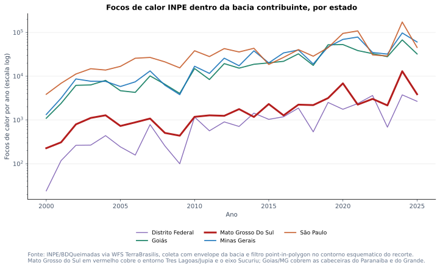
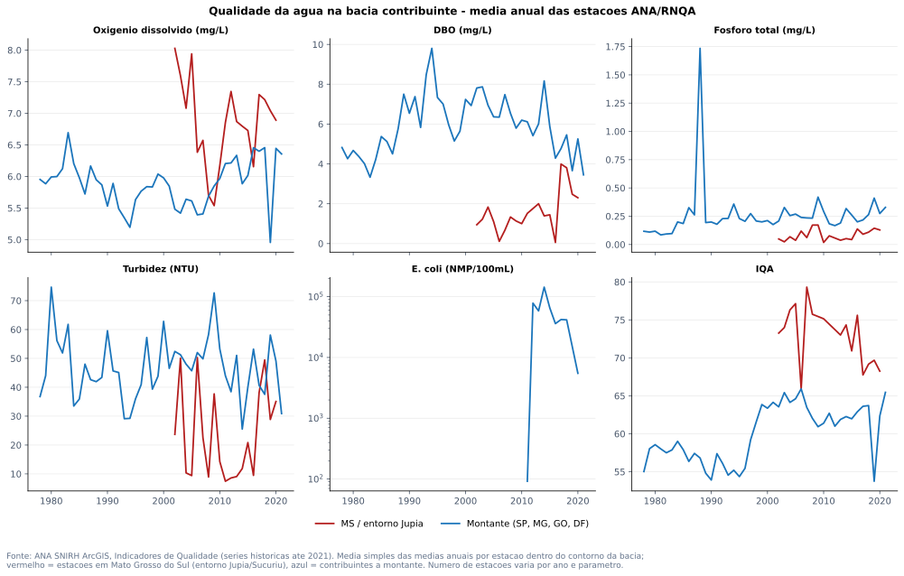
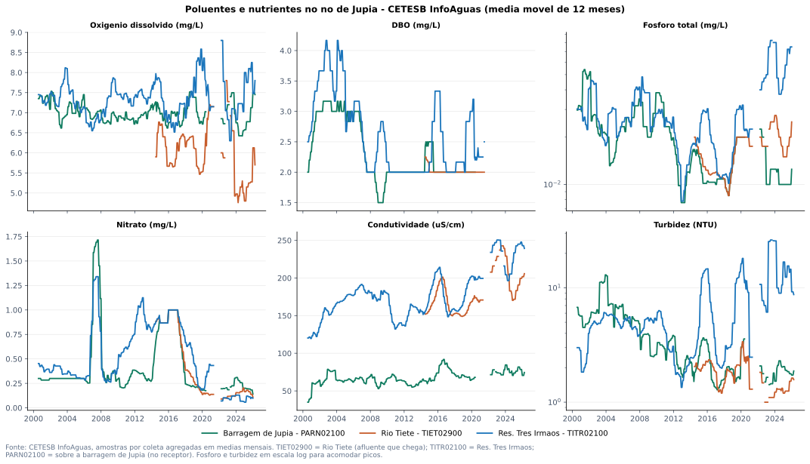
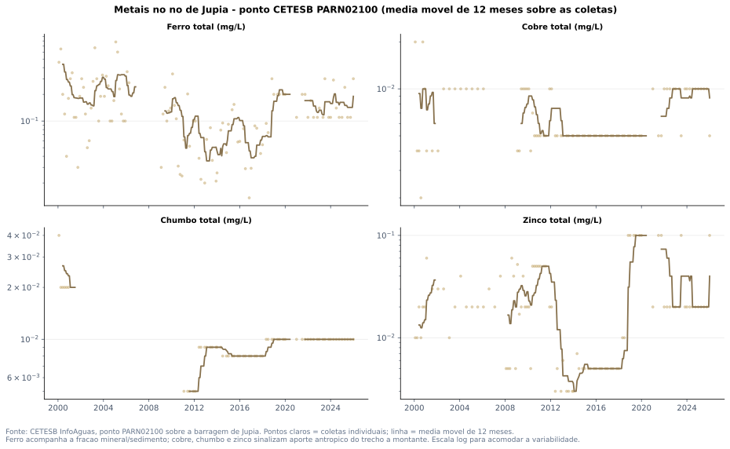
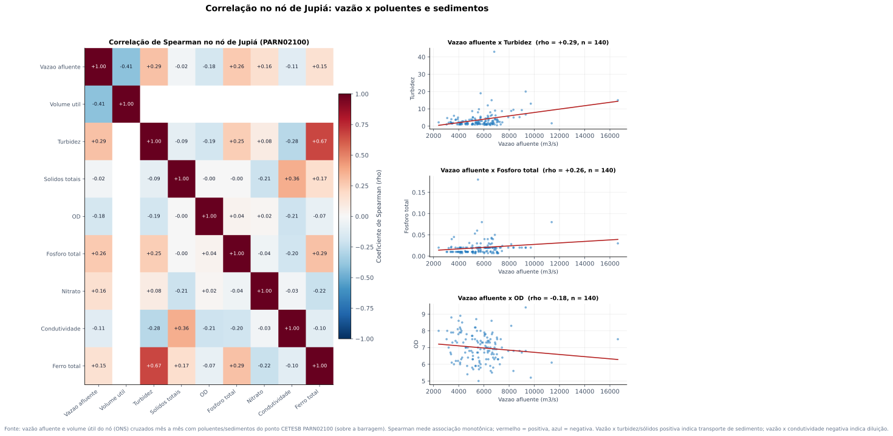

Sistema contribuinte de Jupiá

descriptionO QUE MOSTRA
Diagrama dos quatro blocos operacionais usados nesta primeira leitura: Grande, Paranaíba, Tietê e Paraná/Jupiá.
lightbulbINTERPRETACAO ANALITICA
Jupiá deve ser lido como nó integrador do Alto Paraná. O Tietê continua relevante, mas agora aparece junto com Grande, Paranaíba e o eixo Sucuriú/Jupiá confirmado no inventário ANA.
A unidade analítica deixa de ser apenas a cascata do Tietê e passa a ser a bacia contribuinte integrada de Jupiá.
Vazão afluente mensal por grande contribuinte

descriptionO QUE MOSTRA
Série mensal média de vazão afluente por bacia operacional ONS, agregando os reservatórios selecionados em cada contribuinte.
lightbulbINTERPRETACAO ANALITICA
A comparação mostra a escala relativa dos contribuintes que condicionam Jupiá. Grande e Paranaíba ampliam fortemente o contexto hidrológico em relação a uma leitura Tietê-only.
O relatório de Jupiá precisa reunir os três grandes rios em vez de reaproveitar apenas a narrativa do Tietê.
Nó Jupiá: afluência, defluência e volume útil

descriptionO QUE MOSTRA
Série mensal da UHE Jupiá no ONS, com vazões afluente/defluente e volume útil médio.
lightbulbINTERPRETACAO ANALITICA
A série posiciona Jupiá como receptor operacional do sistema. A coleta complementar já identificou os códigos ANA ligados a UHE Jupiá/Sucuriú, permitindo uma ponte posterior com séries convencionais e qualidade da água.
Nos dados ONS, o ponto auditável é JUPIA; no inventário ANA, UHE JUPIA SUCURIU aparece com código 63003300.
Séries históricas ANA no eixo Sucuriú/Jupiá

descriptionO QUE MOSTRA
Séries mensais de vazão e cota das estações convencionais ANA no eixo local: Alto Sucuriú (63001500) e São José do Sucuriú (63002000) no Rio Sucuriú em Mato Grosso do Sul, e Jupiá-Ponte (63005000), UHE Jupiá Barramento (63007080, via SOAP) e UHE Jupiá Jusante (63010000) no Rio Paraná.
lightbulbINTERPRETACAO ANALITICA
Estas são as medições fluviométricas locais que descem a análise da escala ONS para o rio em Mato Grosso do Sul. O Sucuriú fornece o sinal do contribuinte local; Barramento e Jusante registram o Paraná no entorno da barragem. A série SOAP do Barramento estende a cobertura local além de 2014.
As 2868 medições mensais de 5 estações cobrem 1924-02-01 a 2015-06-01 e agora entram como camada própria de comportamento dos rios.
Anos críticos por reservatório

descriptionO QUE MOSTRA
Mapa de calor do volume útil mínimo anual para os reservatórios selecionados.
lightbulbINTERPRETACAO ANALITICA
O painel permite identificar anos de estresse sincronizado e diferenciar respostas de cabeceira, contribuintes e nó receptor.
Eventos secos devem ser avaliados como sinais sistêmicos, não como anomalias isoladas de uma única cascata.
Pressão territorial: focos de calor dentro da bacia contribuinte

descriptionO QUE MOSTRA
Focos de calor INPE/BDQueimadas por estado e ano, coletados via WFS com o envelope da bacia inteira e filtrados pelo contorno da bacia contribuinte (point-in-polygon). Cobre Mato Grosso do Sul, São Paulo, Minas Gerais, Goiás/DF e bordas.
lightbulbINTERPRETACAO ANALITICA
Esta é a camada de pressão quantitativa do relatório: série anual com localização, agora cobrindo também as cabeceiras do Grande e do Paranaíba que a coleta anterior (corredor do Tietê) não alcançava. Mato Grosso do Sul concentra o entorno de Três Lagoas/Jupiá e do Sucuriú.
2.305.936 focos dentro da bacia em 2000-2025; a camada de pressão agora cobre o recorte completo. não apenas o corredor do Tietê.
Qualidade da água na bacia: OD, DBO, fósforo, turbidez e IQA

descriptionO QUE MOSTRA
Indicadores anuais de qualidade da água da rede ANA/RNQA (médias por estação, 1978-2021) para as estações dentro da bacia contribuinte, separando o eixo Mato Grosso do Sul/entorno de Jupiá dos contribuintes a montante (SP/MG/GO/DF).
lightbulbINTERPRETACAO ANALITICA
O eixo poluentes deixa de depender apenas de PDFs e literatura: OD, DBO, fósforo total, turbidez, E.coli e IQA agora existem como séries anuais tabuladas com coordenadas, prontas para cruzar com vazão e volume útil no nó receptor.
906 estações de qualidade dentro da bacia (12 em MS), período 1978-2021; fonte ANA SNIRH ArcGIS Indicadores de Qualidade.
Poluentes e nutrientes no nó de Jupiá (CETESB InfoÁguas, mensal)

descriptionO QUE MOSTRA
Séries mensais por coleta (2000-2026) em três pontos: TIET02900 (Rio Tietê, o afluente poluído que chega), TITR02100 (Res. Três Irmãos) e PARN02100 (sobre a barragem de Jupiá, o nó receptor). Seis variáveis: oxigênio dissolvido, DBO, fósforo total, nitrogênio-nitrato, condutividade e turbidez.
lightbulbINTERPRETACAO ANALITICA
Aqui o eixo poluentes ganha resolução mensal e o conjunto de nutrientes (fósforo e nitrato, ligados ao uso agrícola do solo) e os proxies de carga dissolvida/sedimento (condutividade, turbidez). Comparar o Tietê que entra com o Paraná no próprio barramento mostra quanto da assinatura do afluente persiste no nó.
32.071 amostras. 226 parâmetros. 14 pontos (Baixo Tietê + eixo Rio Paraná). 2000-02-09 a 2026-05-19.
Metais no nó de Jupiá: ferro, cobre, chumbo e zinco

descriptionO QUE MOSTRA
Séries mensais de metais medidos pela CETESB no ponto PARN02100, sobre a barragem de Jupiá: ferro total, cobre total, chumbo total e zinco total (mg/L), com a referência da classe CONAMA quando aplicável.
lightbulbINTERPRETACAO ANALITICA
Metais associam-se a sedimentos e ao material em suspensão que chega ao reservatório, sendo relevantes para a leitura geomorfológica do nó. O ferro acompanha a fração mineral; cobre, chumbo e zinco sinalizam contribuição antrópica e industrial do trecho a montante.
A camada de metais conecta a carga de sedimentos (turbidez/sólidos) ao aporte mineral e antrópico medido diretamente no nó receptor.
Correlação no nó de Jupiá: vazão x poluentes e sedimentos

descriptionO QUE MOSTRA
Matriz de correlação de Spearman calculada mês a mês entre a hidrologia do nó (vazão afluente e volume útil, ONS) e os poluentes/sedimentos medidos no próprio nó (CETESB PARN02100): turbidez, sólidos totais, oxigênio dissolvido, fósforo, nitrato, condutividade e ferro. Ao lado, os pares vazão x poluente mais fortes em dispersão.
lightbulbINTERPRETACAO ANALITICA
Este é o fechamento da premissa: rios -> poluentes -> correlação deixa de ser afirmação e vira coeficiente. Coeficientes positivos vazão-turbidez/sólidos indicam transporte de sedimento puxado pela vazão; correlações negativas vazão-condutividade/nutrientes indicam diluição em cheia. O volume útil adiciona a leitura do efeito do reservatório.
Correlação mais forte: vazão afluente x Turbidez (rho = +0.29); calculada sobre 140 meses no nó PARN02100.